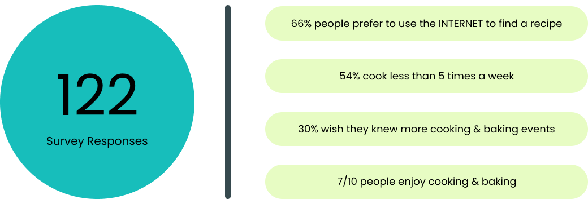

John Nguyen

2.2 Mobile App Design: Yum Yum
Building a brand-new mobile application that solves a real, clearly identified need in users’ everyday lives.PROBLEM: How can we make the cooking experience more enjoyable and social for anyone, espically during a pandemic? As well as create long-lasting cooking habits that the user will want to continue?
TIMELINE: 3 weeks
ROLE: UX Researcher, UI Designer, Project Manager
TOOLS: Miro, FIgma, Trello, Google Suite, Slack, Adobe Illustrator
PREFACE
With the pandemic, many people are taking up new hobbies, cooking/baking being a popular one. However, many individuals find recipes frustrating, from having to hunt down certain ingredients or following ambiguous instructions. People want to show off their food creations and improve their prowess in the kitchen, so how can we design a customizable app that will inspire users to explore more recipes, while also making cooking more social? Yum Yum was designed to help users find recipes and share food related content.1. Empathize
The first step in our design thinking is to put ourselves in other people's shoes and connect with how they might be feeling about their cooking experience during COVID-19. In order to do this, we have conducted five one-on-one interviews; in addition, we surveyed 122 people to gather Quantitative & Qualitative data.
Google Survey: https://docs.google.com/spreadsheets/d/1GK1BG-Qfw6djVeAvUyD80d9GWWsnIf0xhFuJAMz6clI/edit?usp=sharing

One-on-one interviews: